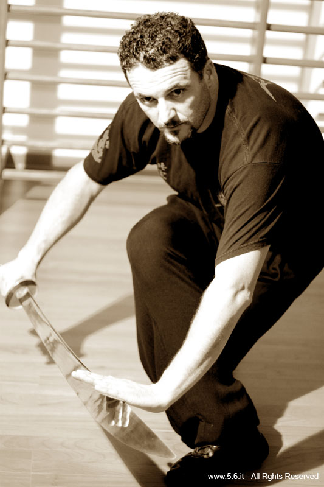
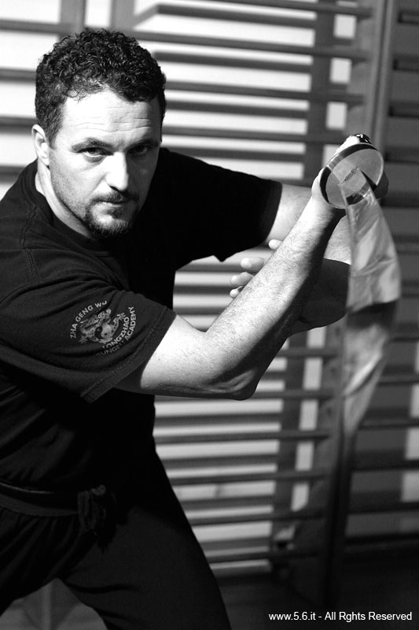

Curriculum marziale
Inizia nel 1978 la pratica del kung-fu studiando Meihuaquan con il M° Giovannetti. Nel 1982 ottiene la cintura nera 1° DUAN e nel 1985 entra a far parte del corpo della Polizia di Stato. Nel 1986 diviene insegnante presso la scuola della Polizia di Stato Genova-Bolzaneto di Educazione Fisica e Difesa Personale. Nello stesso anno ottiene la Cintura Nera 2° DUAN e nel 1990 il 3° DUAN. Dal 1990 al 1994 presta servizio presso il Reparto Operazioni Speciali della Polizia di Stato (NOCS). Nel 1999 diventa istruttore di tiro della Polizia di Stato e viene inviato all’estero presso la capitale dell’Albania con mansioni di istruttore di tiro e tecniche di antiterrorismo. Successivamente, nello stesso anno, a seguito della missione in Albania riceve l’alta onorificenza del Governo Albanese in segno di ringraziamento per il lavoro svolto.
Nel 2000 si certifica istruttore di tactical baton (sfollagente in uso alla Polizia degli Stati Uniti) e di armi non letali, inoltre riceve presso la Polizia Inglese la medaglia di bronzo al merito di servizio. Nel 2001 si certifica istruttore di Fitboxe e ottiene la qualifica di Allenatore di Kung-Fu: fonda quindi la Accademia Shaolin Kung-Fu Terni. Nel 2002 si qualifica al 3° posto europeo nella specialità fucile ad anima liscia. Nel 2003 ottiene la medaglia d’argento al merito di servizio e la qualifica di Istruttore di Kung-Fu. Riceve inoltre il riconoscimento dal comune di Terni per i brillanti risultati conseguiti nell’attività sportiva che hanno dato prestigio alla città e viene autorizzato a fregiarsi dell’onorificenza dello “Stemma di Skandeberg” e del distintivo dell’Aquila d’Oro della Repubblica di Albania, con i complimenti ricevuti nel cerimoniale diplomatico della repubblica albanese. Ottiene la cintura nera 4° DUAN nello stesso anno dalla federazione MAW.
Nel 2004 diviene allievo del Maestro Maurizio Zanetti, fondatore della International Longzhao Gongfu Association e l’anno successivo entra a far parte della Tang’s International Hung-Gar Kung-Fu Association. Nel 2005 frequenta il 160° corso scorte e sicurezza presso il C.A.I.P. di Abbasanta e nell’ambito della Festa dello sport viene premiato presso il comune di Terni per meriti sportivi. Nello stesso anno ottiene la qualifica di Maestro (Shifu). Dal 2006 al 2010 si dedica allo studio dello stile Hung-Gar e Chen Taijiquan sotto la direzione del M° Zanetti e si dedica all’insegnamento e alla formazione anche in stage nazionali. Negli stessi anni diventa referente per il centro Italia nella sezione del Kung-Fu tradizionale.
Nel 2010 diventa presidente della Associazione sportiva dilettantistica Kung-fu Terni nella quale è anche il Direttore Tecnico. Apre quindi, all’interno della sua accademia, il corso di Boxe cinese (Sanda). L’inizio di questa esperienza comporta il raggiungimento di ottimi risultati in quanto solo nel primo anno di gare i suoi allievi vincono 30 medaglie d'oro, 30 d'argento e 18 di bronzo. Nel 2012 diventa referente della regione Umbria per il Kung-Fu tradizionale dello CSEN. Nello stesso anno la sua ASD entra a far parte del circuito della associazione Arti Marziali Italia all’interno della quale la sua scuola partecipa a numerose gare e stage.
Nel 2016 diventa Istruttore per la Polizia di Stato di armi non letali, presso l'Istituto superiore della Polizia di Stato di Nettuno. Nello stesso anno riceve il 5° DUAN. Nell'ottobre 2016 diventa Vice Sovrintendente della Polizia di Stato e nel 2017 frequenta il corso di specializzazione di tecniche investigative e tecniche scientifiche. Nel 2018 è stato riconosciuto come Ambasciatore dello Sport di solidarietà della città di Terni. Nel 2021 è entrato a far parte della Iomidifendo come tecnico formatore e il 25 aprile 2022 viene premiato dall’Unione Veterani dello sport ad Ortona sia per meriti sportivi che per l’impegno civile per la divulgazione dello sport. A luglio 2022 è entrato in quiescenza con il grado di Sovrintendente Capo della Polizia di Stato. Nello stesso anno è stato certificato istruttore master di tiro sportivo e a dicembre 2022 è diventato capotecnico formatore della Iomidifendo. Attualmente il M° Primavera continua l’insegnamento dello stile tradizionale e del Sanda presso la sua Accademia.


